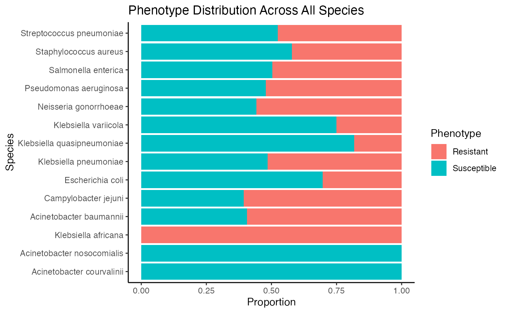
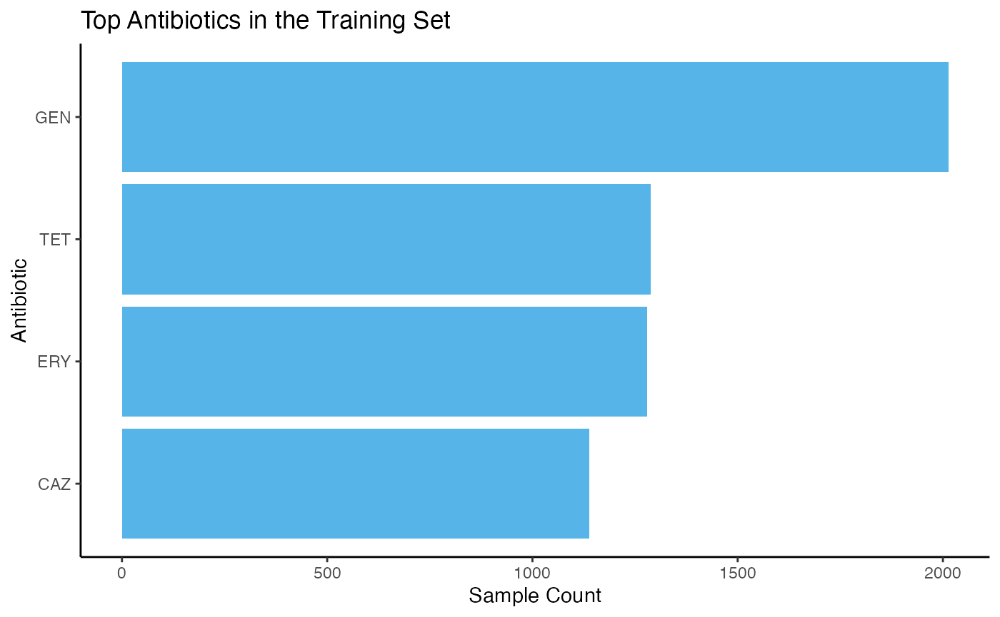

Graphs
Antimicrobial resistance becomes easier to interpret when you start visualizing the data. For example:
training_db_cleaned %>%
filter(phenotype %in% c("Susceptible", "Resistant")) %>%
count(scientific_name_new, phenotype) %>%
group_by(scientific_name_new) %>%
mutate(prop = n / sum(n)) %>%
ggplot(aes(x = reorder(scientific_name_new, -prop), y = prop, fill = phenotype)) +
geom_bar(stat = "identity", position = "fill") +
labs(
x = "Species",
y = "Proportion",
fill = "Phenotype",
title = "Phenotype Distribution Across All Species"
) +
theme_classic() +
coord_flip()
training_db_cleaned %>%
count(antibiotic, sort = TRUE) %>%
top_n(10, wt = n) %>%
ggplot(aes(x = reorder(antibiotic, n), y = n)) +
geom_bar(stat = "identity", fill = "#56B4E9") +
coord_flip() +
labs(
x = "Antibiotic",
y = "Sample Count",
title = "Top Antibiotics in the Training Set"
) +
theme_classic()